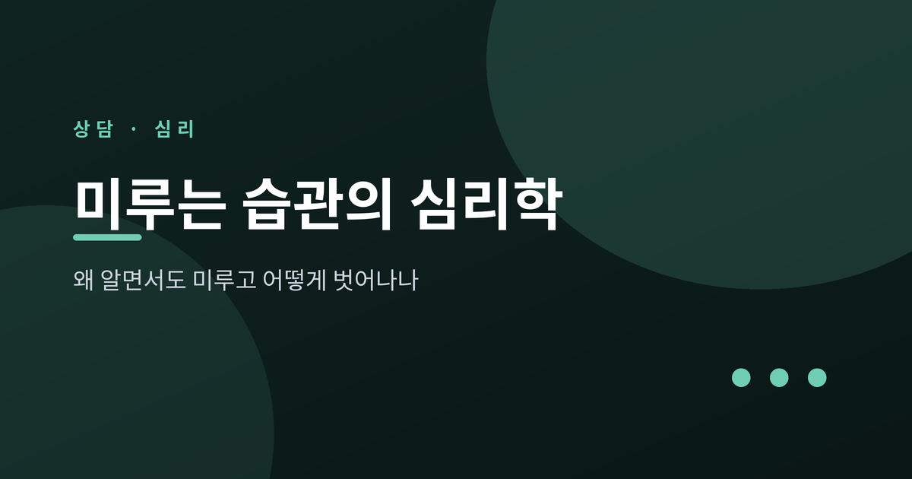
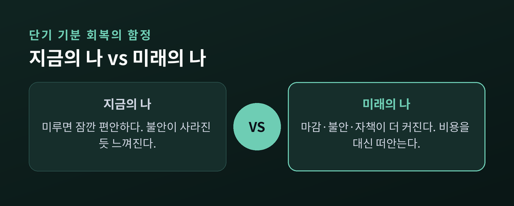
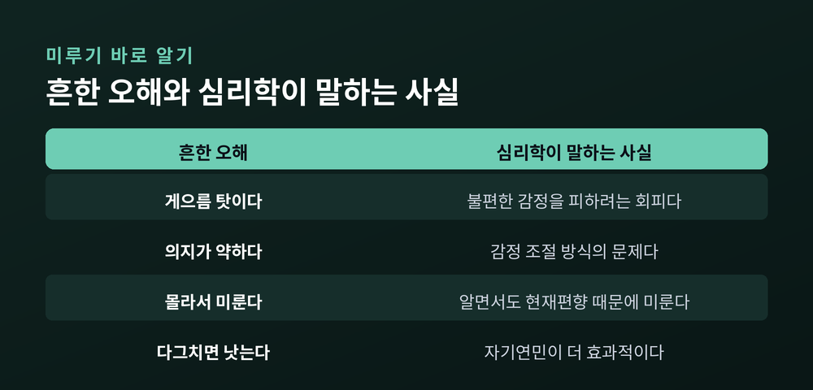
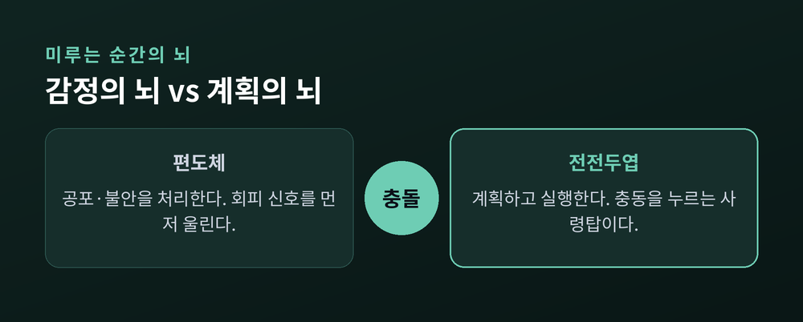
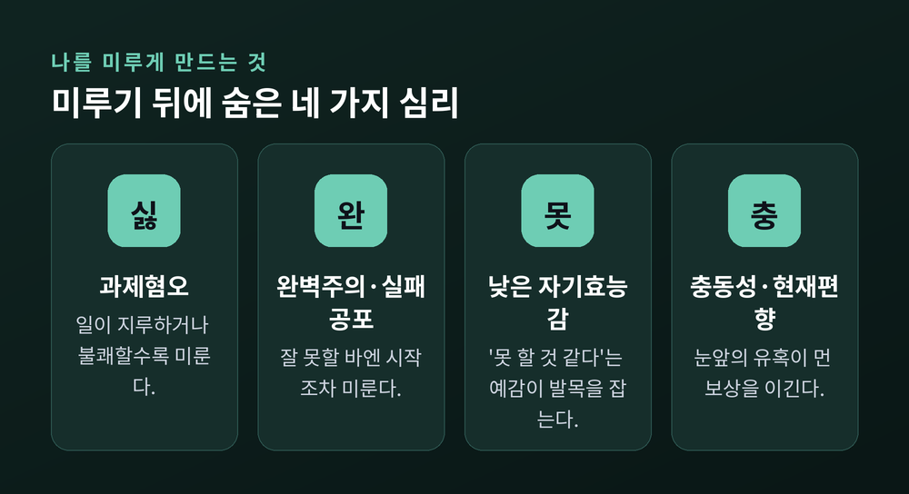
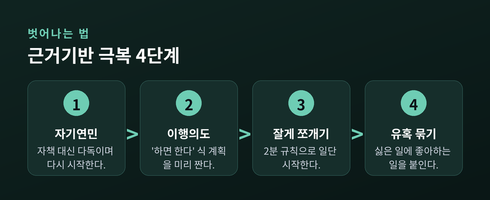

미루는 습관의 심리학 — 왜 알면서도 미루고 어떻게 벗어나나

해야 할 일을 알면서도 자꾸 뒤로 미룬 경험, 누구에게나 있습니다. 이번 글에서는 우리가 왜 미루는지, 그리고 어떻게 벗어날 수 있는지를 상담심리의 관점에서 정리해 보겠습니다. 게으름을 탓하는 이야기가 아니라, 마음이 어떻게 작동하는지에 관한 이야기입니다.
핵심을 먼저 말씀드립니다. 미루기는 시간관리의 문제가 아니라 감정 조절의 문제입니다. 그래서 해법도 일정표가 아니라 마음에서 출발합니다.
■ 미루기는 게으름이 아닙니다
오래 미루는 분일수록 스스로를 게으르다고 자책합니다. 하지만 최근 심리학은 다른 그림을 그립니다.
건강심리학자 퓨샤 시로이스는 미루기를 “게으름이나 형편없는 시간관리 능력의 문제가 아니라 정서 조절의 문제”로 정리합니다. 어떤 일이 지루함, 불안, 좌절, 자기의심 같은 불편한 감정을 불러올 때, 우리는 그 감정을 피하려고 일을 미룹니다. 미루는 대상은 일 자체가 아니라, 그 일이 데려오는 감정인 셈입니다.
심리학자 팀 피칠은 이를 “단기 기분 회복”이라 부릅니다. 미루는 순간 잠깐 마음이 편해집니다. 문제는 그 편안함이 아주 짧다는 데 있습니다.

예전엔 미루기를 의지의 문제로 봤습니다. 지금은 감정을 다루는 방식의 문제로 봅니다. 이 관점의 전환이 극복의 출발점입니다.

■ 알면서도 미루는 이유 — 현재편향
우리는 왜 결과를 뻔히 알면서도 미룰까요. 뇌가 먼 미래보다 지금 이 순간을 훨씬 크게 느끼기 때문입니다.
심리학은 이를 현재편향, 또는 시간할인이라 부릅니다. 미래의 보상과 손해는 마치 할인된 가격표처럼 작게 느껴집니다. 반면 지금의 편안함은 손에 잡힐 듯 생생합니다.
미루기 연구의 권위자 피어스 스틸은 시간동기이론으로 이를 설명합니다. 일의 가치와 성공 기대가 충동성과 시간 지연에 눌릴 때 미루기가 생깁니다. 보상이 먼 초기일수록 동기가 약하고, 마감이 코앞에 와서야 몸이 움직입니다. 실제로 시간할인 성향이 강한 사람이 현실에서도 더 많이 미룬다는 연구가 있습니다.
여기서 한 가지 오해를 짚고 싶습니다. 미루는 사람이 미래를 몰라서 미루는 것이 아닙니다. 결과를 알면서도, 지금의 감정이 더 크게 느껴지기 때문에 미룹니다. 그래서 “정신 차려라”는 말은 대개 효과가 없습니다. 필요한 것은 다짐이 아니라, 지금과 미래의 무게추를 다시 맞추는 장치입니다.
마감 앞에서만 집중력이 폭발하는 경험, 이제 이유가 조금 보이실 겁니다.
■ 미루는 순간, 뇌 안에서 벌어지는 일
미루기는 뇌 안의 힘겨루기로도 설명됩니다.
한쪽에는 감정의 뇌인 편도체가 있습니다. 공포와 불안을 처리하는 경보 장치입니다. 다른 쪽에는 계획의 뇌인 전전두엽이 있습니다. 판단하고 계획하고 충동을 누르는 사령탑입니다.
어려운 일을 마주하면 편도체가 먼저 불안 신호를 울립니다. 그 신호가 전전두엽의 차분한 계획을 눌러버리고 회피를 부추깁니다.

2018년 독일 루르대학교 보훔 연구는 흥미로운 단서를 남겼습니다. 미루는 성향이 강한 사람일수록 편도체 부피가 더 크고, 감정을 조절하는 뇌 영역과의 연결이 약했습니다. 다만 이것은 상관관계일 뿐, 뇌 구조가 곧 운명이라는 뜻은 아닙니다. 습관과 연습으로 달라질 여지는 충분히 남아 있습니다.
■ 나를 미루게 만드는 것들
미루기의 뒤에는 몇 가지 익숙한 심리가 있습니다.
스틸의 대규모 메타분석은 네 가지를 반복해서 지목합니다. 일이 지루하거나 불쾌하게 느껴지는 과제혐오. “나는 못 할 것 같다”는 낮은 자기효능감. 눈앞의 유혹에 약한 충동성. 그리고 먼 보상을 작게 느끼는 시간 지연입니다.
여기에 완벽주의와 실패공포가 더해집니다. 잘 해내지 못할 바에는 시작조차 미루는 마음입니다. 완벽하게 하려는 부담이 오히려 첫걸음을 막습니다.

여기서 악순환이 시작됩니다. 미루면 죄책감이 쌓입니다. 그 죄책감은 다시 불편한 감정이 되어 또 미루게 만듭니다. 시로이스의 연구에서 만성적 미루기는 낮은 자기연민, 높은 스트레스와 맞닿아 있었습니다. 자책이 깊을수록 미루기는 더 단단해집니다.
■ 벗어나는 법 — 마음부터 다독이기
미루기가 감정의 문제라면, 첫 단추도 감정입니다.
가장 먼저 권하고 싶은 것은 자기연민입니다. “남들도 미룬다”고 인정하고, 자책 대신 다음 행동으로 시선을 옮기는 태도입니다. 자기연민이 과제를 시작하려는 의도를 높인다는 연구가 있습니다. 과거의 미룸을 스스로 용서하면 이후의 미루기가 줄어든다는 결과도 있습니다. 자신을 몰아붙이는 대신, 다시 시작할 여지를 주는 것입니다.
예전엔 마음을 다잡으려 스스로를 다그쳤습니다. 지금은 스스로를 다독일 때 오히려 움직인다는 것을 압니다.
■ 벗어나는 법 — 행동을 설계하기
마음을 다독였다면, 이제 행동에 장치를 답니다.

첫째, 이행의도입니다. 심리학자 피터 골위처가 제안한 “만약 ~하면, 그때 ~한다”는 구체적 계획입니다. 예를 들어 “저녁 8시가 되면, 책상에 앉아 보고서 첫 문장을 쓴다”처럼 상황과 행동을 미리 묶어 둡니다. 94개 연구를 모은 리뷰에서 이런 계획은 목표 달성률을 뚜렷이 높였습니다.
둘째, 잘게 쪼개기와 2분 규칙입니다. 큰 일은 작고 덜 위협적인 조각으로 나눕니다. 2분 안에 끝날 일은 지금 바로 합니다. 2분 넘는 일도 “일단 2분만” 시작하면 관성이 풀립니다. 가장 어려운 부분은 대개 시작 그 자체이기 때문입니다.
셋째, 유혹 묶기입니다. 행동과학자 케이티 밀크먼의 방법으로, 하기 싫은 일과 하고 싶은 일을 하나로 묶습니다. 좋아하는 오디오북은 미뤄 둔 집안일을 할 때만 듣는 식입니다. 한 연구에서 이 방법을 쓴 사람은 그렇지 않은 사람보다 운동할 확률이 더 높았습니다.
넷째, 가까운 마감과 환경 설계입니다. 먼 목표에는 중간 점검점을 만들어 보상을 앞당깁니다. 유혹거리는 손이 닿지 않는 곳에 둡니다. ‘미래의 나’를 구체적으로 떠올리는 것도 도움이 됩니다.
이 전략들의 공통점이 하나 있습니다. 의지를 쥐어짜는 대신, 미루기 쉬운 환경을 미루기 어려운 환경으로 바꾼다는 점입니다. 감정과 싸워 이기려 하기보다, 감정이 덜 방해하도록 판을 다시 짜는 것입니다. 작은 장치 하나가 큰 다짐보다 오래갑니다.
■ 언제 전문가의 도움이 필요할까
미루기는 흔하고, 어느 정도는 자연스러운 일입니다. 다만 미루기가 오래 이어지며 학업, 일, 건강, 관계에 반복적으로 손상을 준다면 이야기가 다릅니다.
과도한 불안이나 우울, 멈추지 않는 자기비난이 함께 온다면 혼자 견디지 않으셔도 됩니다. 미루기는 때로 우울, 불안, 주의력 문제와 얽혀 있기도 합니다. 그럴 때는 심리상담사나 정신건강 전문가의 도움을 받아 보시길 권합니다. 이 글은 일반적인 정보를 정리한 것일 뿐, 진단이나 치료를 대신하지는 않습니다.
끝으로 한 마디만 더 드리겠습니다.
미루기를 이기는 힘은 더 센 의지가 아니라, 자신을 대하는 더 다정한 태도에서 나옵니다. “완벽하게 시작하기보다, 작게 시작하기.” 오늘은 이 한 줄만 챙기셔도 충분합니다.
다시 미루게 되더라도 스스로를 너무 몰아세우지는 마시길 바랍니다. 그 다정함이, 다음 한 걸음을 여는 가장 확실한 방법일지도 모릅니다.